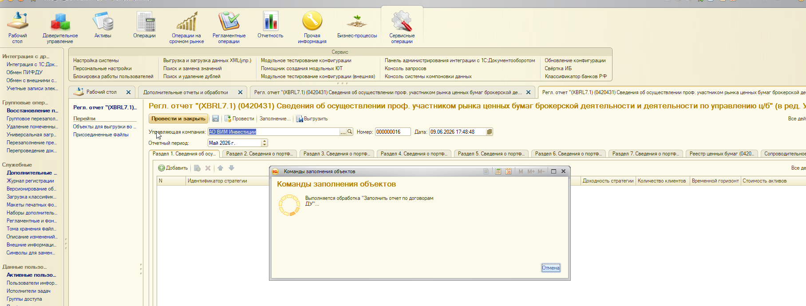
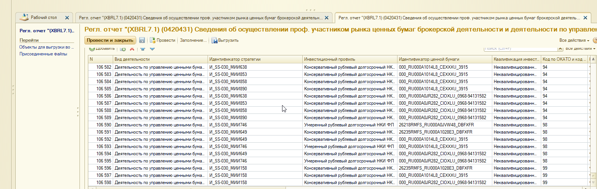
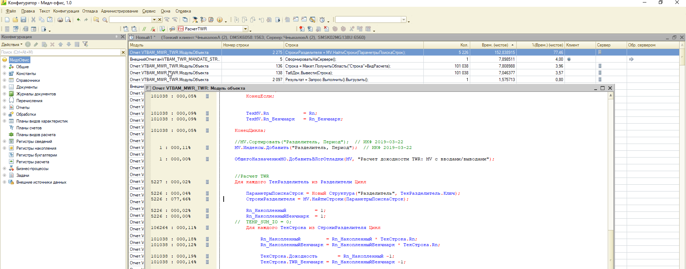
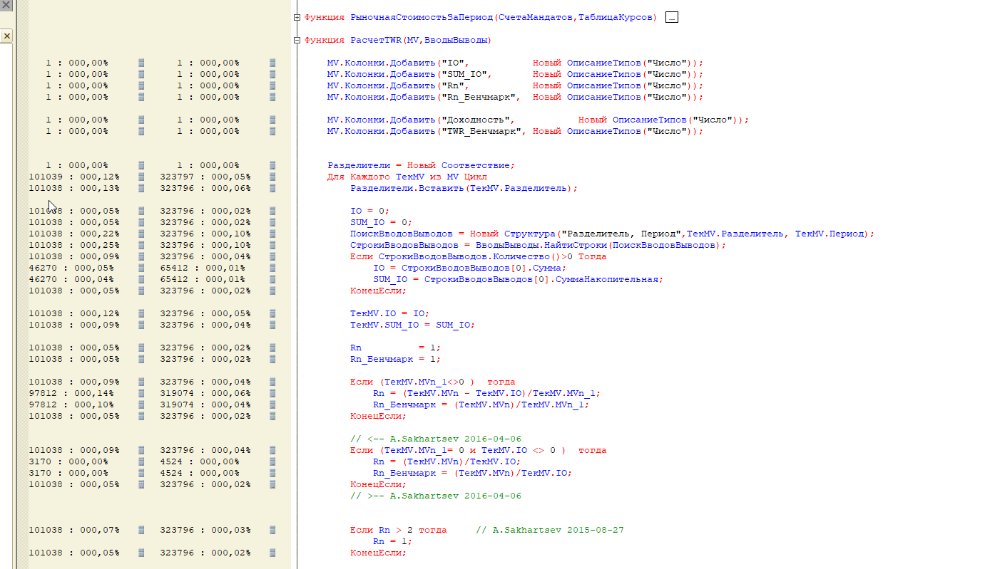
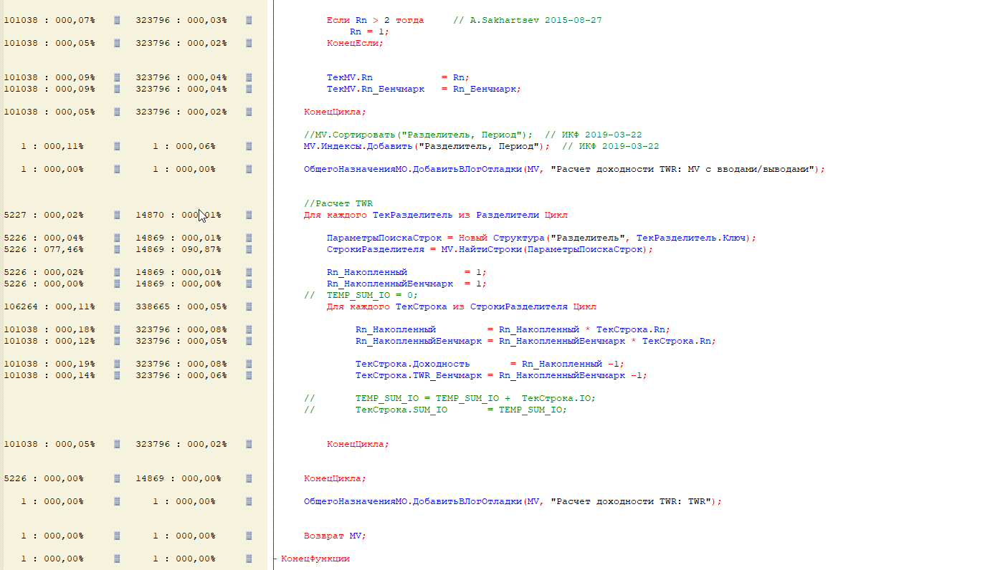

IMDEV-9005 — Замеры заполнения формы 0420431 (старый алгоритм)
Источник: Замеры 431 форма Т-1 в журнал регистрации.docx |
Среда: т-1 |
База ДУ: Srvr="SMSK02MG138U";Ref="AVC_PP_DU" |
Период отчета: 01.05.2026 - 31.05.2026 |
Дата замера: 09.06.2026
Введение
Отчет фиксирует результаты профилирования старого алгоритма заполнения регламентированного отчета
0420431 (таксономия XBRL 7.1, по договорам ДУ) на среде т-1.
Использованы два инструмента: замер производительности платформы (отладчик) и
журнал регистрации (событие IMDEV-9005.Замеры).
Объект тестирования: документ
РО_XBRL7_1_0420431_СведенияОДеятельностиПоУправлениюЦБ_7119У,
номер 000000016 от 09.06.2026, УК «АО ВИМ Инвестиции».
Хронометраж прогона: старт 17:50, финиш 09.06.2026 19:42:53
(на стене ~1 ч 53 мин). Дополнительно на копии базы МО (от 08.06.2026) выполнен прогон
«по-старому» с замерами отладчика: 21:24:01 - 23:06:29 (~1,5 ч).
Технология замеров
Два уровня измерений
| Уровень | Инструмент | Что измеряет |
|---|
| Макро (этапы обработки) |
Журнал регистрации IMDEV-9005.Замеры |
17 этапов заполнения: подключение МО, TWR, разделы 1-7, запись |
| Микро (строки кода) |
Замер производительности 1С (фоновое задание) |
Конкретные строки BSL: TWR, НайтиСтроки, ЗаполнитьРаздел_1 |
| МО (ядро TWR) |
Отладчик в конфигураторе МО |
Отчет.VTBAM_MWR_TWR.РасчетTWR, стр. 2275 — MV.НайтиСтроки |
Параметры подключения
| Параметр | Значение |
|---|
| Среда | т-1 |
| База ДУ | Srvr="SMSK02MG138U";Ref="AVC_PP_DU" |
| Фоновое задание | Admin (4), SMSK02MG138U:6560 |
| База МО (детальный замер) | копия от 08.06.2026, без режима совместимости |
| Обработка | внЗаполнениеРеглОтчетаПоДоговорамДУ_0420431_71 (старый алгоритм) |
Иерархия узких мест (профилировщик ДУ)
ВыполнитьКоманду (внешняя обработка)
|-- ЗаполнитьРазделыОтчета 6 036 сек 98,99%
| |-- СформироватьВТ_ДанныеПоСтратегиям 5 393 сек 88,44%
| | |-- TWR(...) стр.770 2 949 сек 48,37% (64 вызова)
| | |-- НайтиСтроки стр.801 2 355 сек 38,63% (25 729 вызовов)
| |-- ЗаполнитьРаздел_1 стр.237 510 сек 8,37%
| | |-- НайтиСтроки стр.2470 336 сек 5,51% (22 466)
| | |-- НайтиСтроки стр.2471 155 сек 2,55% (22 466)
+-- ИТОГО замера 6 097 сек 100,00%
Сводная статистика
1 ч 42 мин
Чистое время (профилировщик)
6 097,5 сек
87,0%
TWR + НайтиСтроки (ДУ)
стр. 770 + 801 = 5 305 сек
77-91%
MV.НайтиСтроки (МО)
стр. 2275 VTBAM_MWR_TWR
Распределение времени — профилировщик ДУ (топ-7 строк)
| Стр. |
Операция |
Вызовов |
Сек |
% |
Доля |
| 106 |
ЗаполнитьРазделыОтчета(...) |
1 |
6 036,0 |
99,0 |
|
| 234 |
СформироватьВТ_ДанныеПоСтратегиям(...) |
1 |
5 392,5 |
88,4 |
|
| 770 |
ВТБ_РасчетДоходностиСервер.TWR(...) |
64 |
2 949,2 |
48,4 |
|
| 801 |
ДанныеДоходности.НайтиСтроки(Отбор) |
25 729 |
2 355,5 |
38,6 |
|
| 237 |
ЗаполнитьРаздел_1(...) |
1 |
510,1 |
8,4 |
|
| 2470 |
СведенияПоДоговорам.НайтиСтроки(Отбор) |
22 466 |
335,9 |
5,5 |
|
| 2471 |
...Загруженные.НайтиСтроки(Отбор).Количество() |
22 466 |
155,4 |
2,6 |
|
Строки 770 и 801 внутри СформироватьВТ_ДанныеПоСтратегиям дают суммарно ~87% всего замера.
Узкое место в базе МО
На копии базы МО (08.06.2026) профилировщик выявил главный узел внутри штатного отчета
VTBAM_MWR_TWR — функция РасчетTWR:
| Модуль / стр. |
Код |
Вызовов |
Сек (чист.) |
% |
VTBAM_MWR_TWR стр. 1940 |
ДанныеTWR = РасчетTWR(MV, ВводыВыводы) |
1 |
11 353,2 |
84,9 |
VTBAM_MWR_TWR стр. 2275 |
СтрокиРазделителя = MV.НайтиСтроки(ПараметрыПоискаСтрок) |
5 226 / 14 869 |
152,8 / 1 333,2 |
77,5 / 90,9 |
Цикл по Разделители с полным перебором MV на каждой итерации —
типичный паттерн O(N*M). При тысячах мандатов и сотнях периодов это миллионы операций поиска.
Для каждого ТекРазделитель Из Разделители Цикл
ПараметрыПоискаСтрок = Новый Структура("Разделитель", ТекРазделитель.Ключ);
СтрокиРазделителя = MV.НайтиСтроки(ПараметрыПоискаСтрок); // 77-91% времени
Для каждого ТекСтрока Из СтрокиРазделителя Цикл
Rn_Накопленный = Rn_Накопленный * ТекСтрока.Rn;
...
КонецЦикла;
КонецЦикла;
Патч с индексом и одним проходом: Отчеты/IMDEV-9005_RaschetTWR_patch_VTBAM_MWR_TWR.bsl.
Базовую конфигурацию МО в рамках IMDEV-9005 не меняем.
Скриншоты из исходного документа
Запуск заполнения отчета 0420431, период май 2026

Результат: более 106 000 строк в разделе отчета

Профилировщик: общая картина (фоновое задание Admin, SMSK02MG138U)

Профилировщик: детализация строк 770, 801, 2470, 2471

МО: стр. 2275 — MV.НайтиСтроки в РасчетTWR (77,46%)

МО: код РасчетTWR, цикл по MV

МО: полоса профилировщика на стр. 2275

Сопоставление с журналом регистрации
Тот же прогон (17:50 - 19:42:53) зафиксирован обработкой «Замеры» в журнале регистрации.
Макро-замер по этапам — в отчете
imdev-9005_measurements_may2026.html:
| Метрика | Журнал (этапы) | Профилировщик (строки) |
|---|
| Общее время |
6 837 сек (1 ч 54 мин) |
6 097 сек (1 ч 42 мин) |
| Данные МО / TWR |
5 851 сек (85,6%) |
5 393 сек (88,4%) |
| Раздел 1 |
735 сек (10,7%) |
510 сек (8,4%) |
| НайтиСтроки в разделе 1 |
в составе 735 сек |
491 сек (стр. 2470+2471) |
Разница в абсолютных секундах объясняется разными границами замера: журнал включает подключение МО,
дозаполнение и запись; профилировщик считает чистое время выполнения строк BSL.
Исходные строки из docx (текст профилировщика)
ОБЩИЕ
Итого : ЗаполнитьРазделыОтчета(ОбъектНазначения); 6 036,02 сек 98,99%
Стр. 234 - СформироватьВТ_ДанныеПоСтратегиям(...); 5 392,52 сек 88,44%
Стр 237 - ЗаполнитьРаздел_1(...); 510,12 сек 8,37%
ДЕТАЛЬНЫЕ
ДанныеДоходности = Соединение.ВТБ_РасчетДоходностиСервер.TWR(...); 2 949,22 сек 48,37% (64)
СтрокиДоходности = ДанныеДоходности.НайтиСтроки(Отбор); 2 355,48 сек 38,63% (25 729)
Строки = СведенияПоДоговорам.НайтиСтроки(Отбор); 335,89 сек 5,51% (22 466)
СтрокиУжеЗагружены = ...Загруженные.НайтиСтроки(...); 155,44 сек 2,55% (22 466)
В МО слабое место:
Отчет.VTBAM_MWR_TWR стр.1940 РасчетTWR(MV,ВводыВыводы); 11 353,24 сек 84,92%
Отчет.VTBAM_MWR_TWR стр.2275 MV.НайтиСтроки(...); 1 333,21 сек 90,87%
Возможности оптимизации
| Приоритет |
Оптимизация |
Целевая строка |
Текущее время |
Ожидаемый выигрыш |
| 1 |
Индекс + один проход вместо MV.НайтиСтроки в РасчетTWR |
МО стр. 2275 |
77-91% TWR |
кратное ускорение TWR |
| 2 |
Batch-вызов TWR / MANDATE_STRATEGY (v1.20 opt.1) |
ДУ стр. 770 (64 COM-вызова) |
2 949 сек |
~40-50 мин |
| 3 |
Индекс вместо НайтиСтроки в обработке (v1.20 opt.2) |
ДУ стр. 801, 2470, 2471 |
2 847 сек |
~5-10 мин |
| 4 |
Параллельное заполнение разделов 2-7 (opt.3) |
разделы 2-7 |
~139 сек |
~1-2 мин |
Выводы
- 96% времени старого алгоритма — TWR и операции
НайтиСтроки (подтверждено и журналом, и профилировщиком).
- Вызов
TWR из обработки (стр. 770, 64 раза) и последующий НайтиСтроки по результату (стр. 801, 25 729 раз) — два главных узла на стороне ДУ.
- Внутри МО корневая причина —
MV.НайтиСтроки в цикле по разделителям (стр. 2275, 77-91% РасчетTWR).
- Оптимизация v1.20 (batch TWR + индексы в разделе 1) и патч
РасчетTWR в МО бьют в одни и те же 96% — приоритеты подтверждены замерами т-1.
- После внедрения оптимизаций рекомендуется повторить замер на том же периоде (май 2026) для сравнения ДО/ПОСЛЕ.
IMDEV-9005 | Замеры старого алгоритма | Сгенерирован 09.06.2026 | т-1 AVC_PP_DU | источник: docx + профилировщик